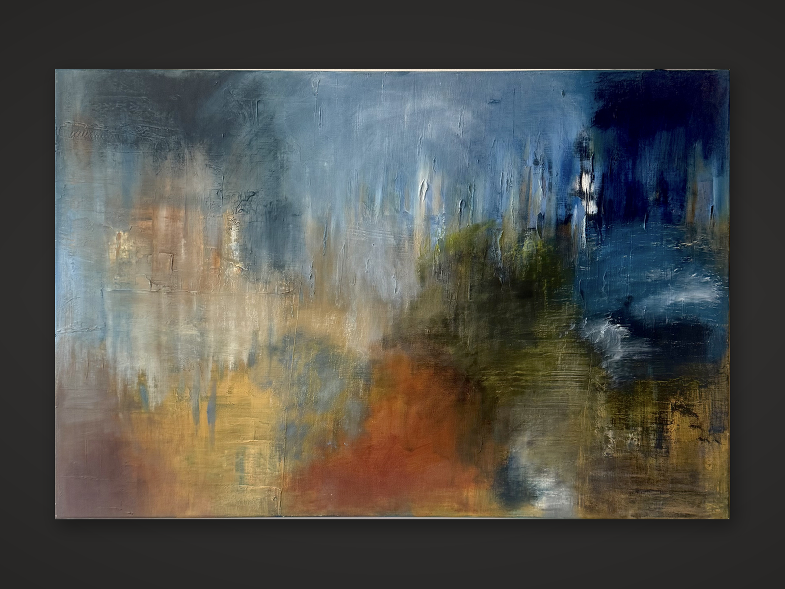

AMBLESIDE ARTIST
Elissa Houghton
Painting · Abstraction · Mixed Media

FEATURED WORK
Many Paths
Elissa Houghton
MIXED MEDIA
Layers of color, texture and atmosphere create an abstract landscape poised between memory and place.
THE ARTIST
Between beauty
and tragedy.
Elissa Houghton's painting practice is rooted in a quiet, meditative process in which color, sensation and memory are allowed to unfold across the canvas.
She describes painting as a space where beauty and tragedy can be experienced simultaneously. Rather than resolving those opposites, her work allows them to remain in tension.
Her paintings move between suggestion and abstraction. Forms appear and recede, often evoking water, atmosphere, landscape or architecture without becoming fixed descriptions of any single place.
The result is a body of work that feels less like representation than recollection — an accumulation of light, movement, color and emotional residue.
THE WORK
“I wage silent wars with color on canvas, responding to beauty and tragedy simultaneously.”
— Elissa Houghton
THE PROCESS
A lyrical
approach to
painting.
Houghton describes painting as a multi-sensory experience and approaches the canvas through both intuition and physical engagement.
Her background as a musician informs the rhythm of the process. Color, gesture, movement and interval become part of a visual language that can feel musical even when the imagery remains abstract.
She is drawn to the physical nature of painting and often uses unconventional methods to gently extend the possibilities of her materials.
Rather than forcing the painting toward a predetermined image, Houghton responds to what emerges — allowing layers, marks and atmospheric passages to accumulate into something discovered rather than imposed.
SELECTED WORKS
The Collection
INFLUENCE
Creative Roots
Houghton describes herself as deeply influenced by the creative roots of her family and the artistic environment that helped shape her visual language.
Her experience as a musician informs the lyrical quality of her painting process, particularly its rhythm, movement and sensitivity to tone.
Houghton has specifically cited artist Cora Cohen as an important source of inspiration and support.
COLLECT